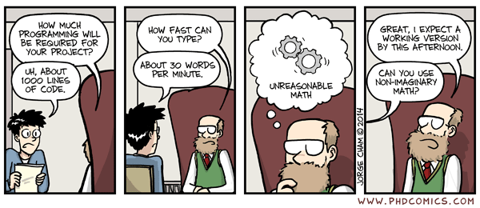

https://github.com/ioos/secoora
 http://www.phdcomics.com/comics.php?f=1687
We would like to thank SECOORA for the funding support. We would also like to thank the contributions of members of NOAA/IOOS, and Principal investigators.